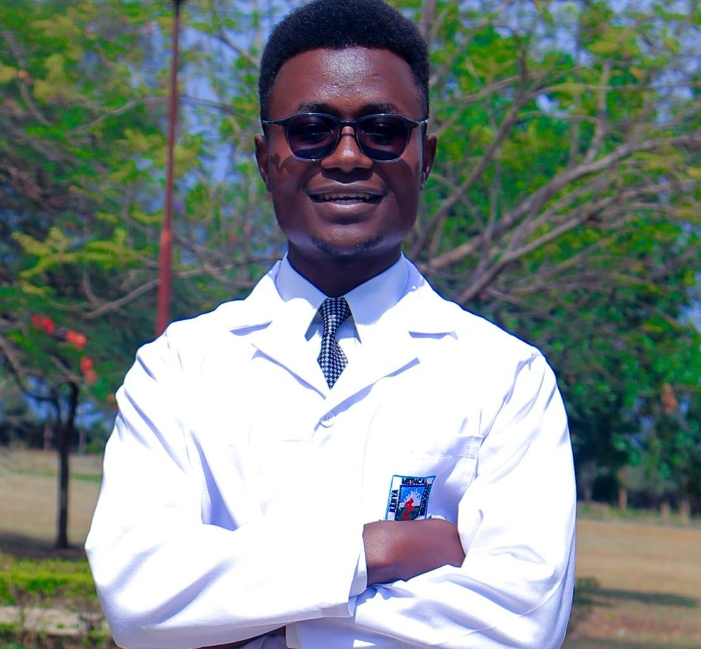

Stansfield Nyandoro
Kenya Chapter Outreach Manager
Stansfield Nyandoro is a medical student at Uzima University, deeply passionate about healthcare, humanitarian service, and community empowerment. With a strong interest in sexual and reproductive health, research, and patient-centered care, he strives to bridge gaps in access to quality healthcare for underserved populations.
Beyond academics, he is actively involved in leadership, advocacy, and collaborative projects that promote health equity and social impact. His vision is to combine medical expertise with innovative solutions to transform lives and strengthen healthcare systems locally and globally.